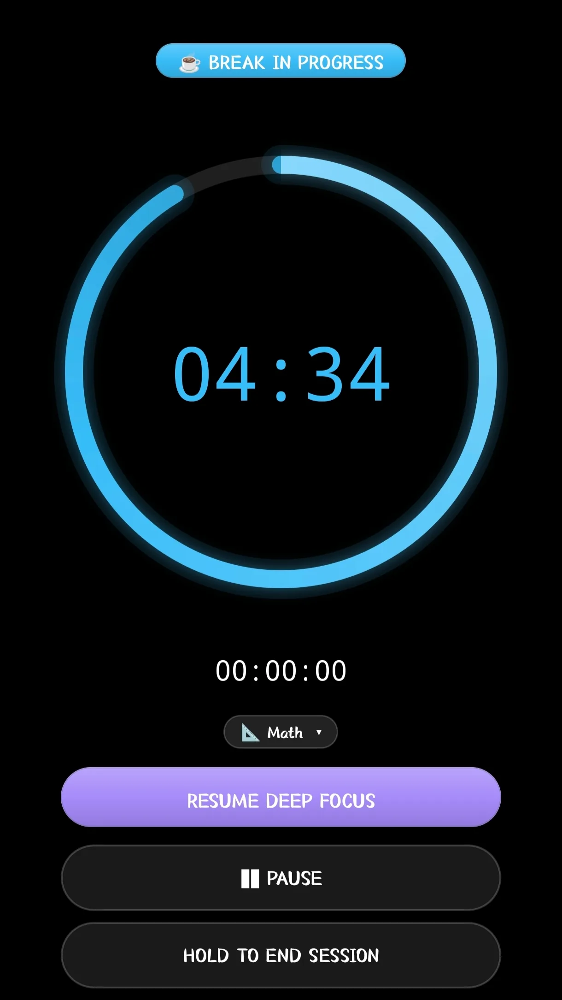
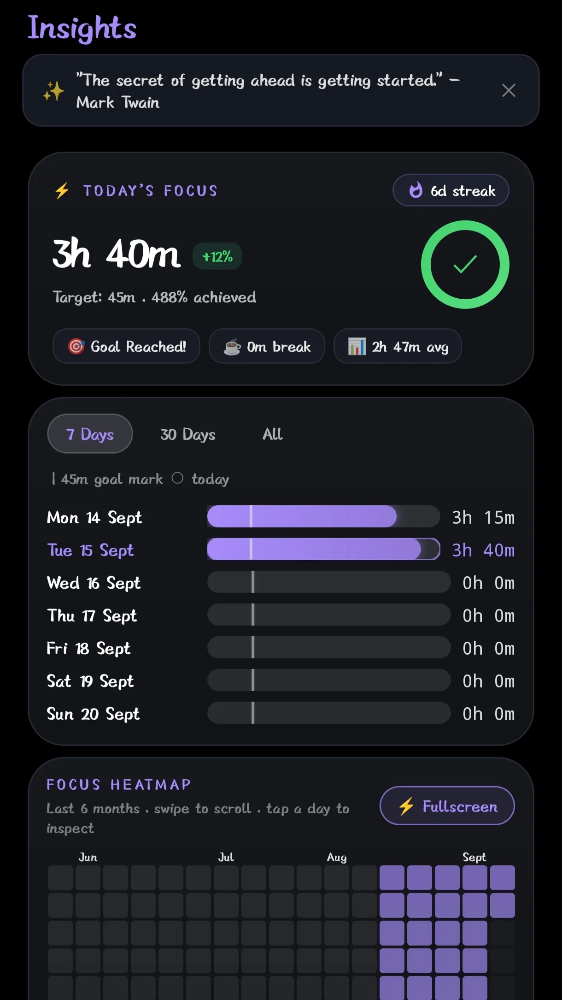
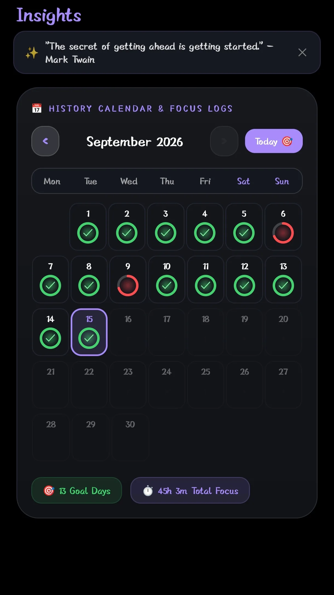
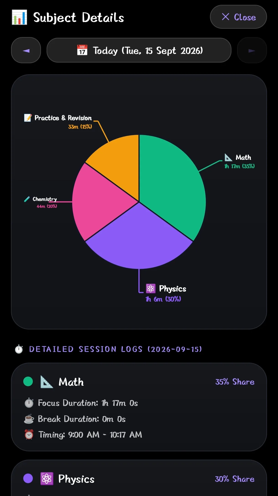
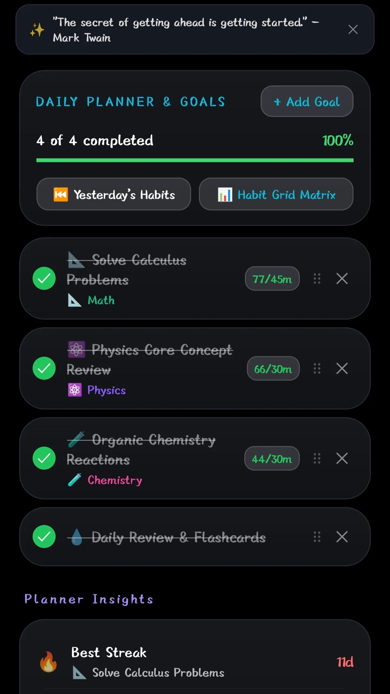
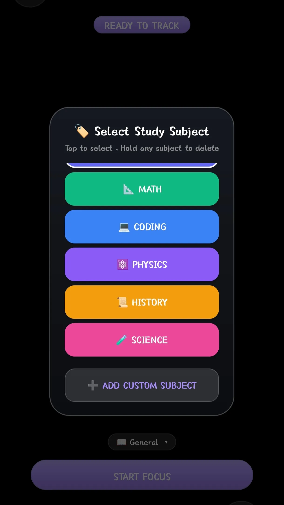
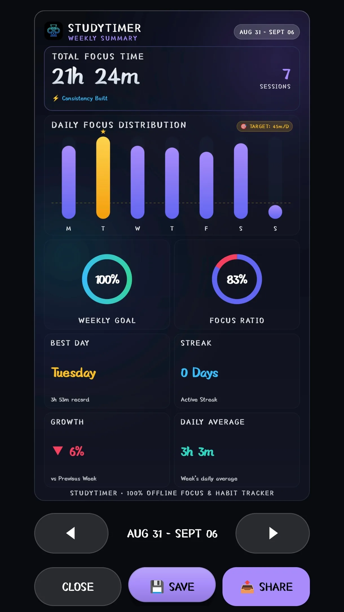
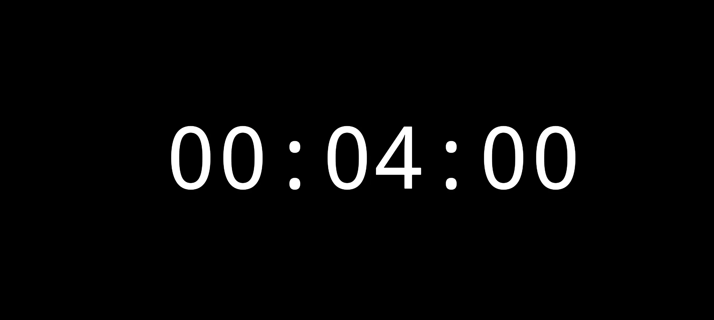
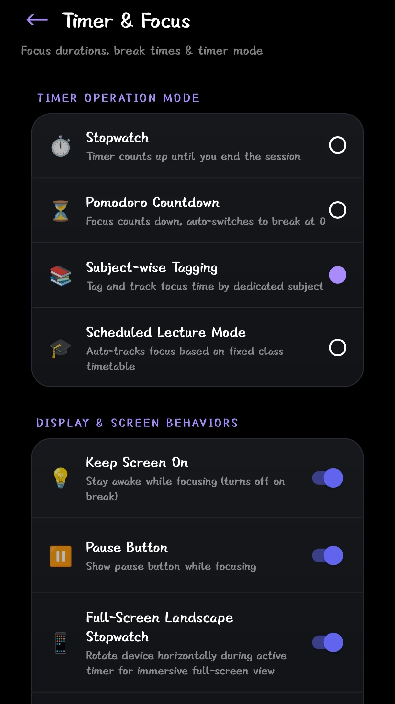

Study Better.
Build Daily Focus.
The simple study timer app that helps you stay focused, stop procrastinating on your phone, and build a daily study habit for all your school and college subjects.

No popups or banner ads interrupting your homework or study sessions.
Build daily momentum and see your consistency grow day by day.
Study anywhere — in school libraries, dorm rooms, or with your phone on airplane mode.
Clean, Dark & Easy on the Eyes
Take a look inside StudyTimer. Everything you need to plan your study day in one simple place.
1. Pomodoro Focus Timer
Study in 25-minute or 50-minute blocks with gentle break alerts to prevent study fatigue.

2. Daily Study Progress
See your total study hours for today, your daily goal progress, and subject summaries.

3. Study Streak Calendar
Color-coded days show your study consistency so you never break your daily learning habit.

4. Subject Time Breakdown
Clear pie charts show exactly how many hours you gave to each subject this week.

5. Study Goal Planner
Set daily and weekly study targets for upcoming tests, quizzes, and final exams.

6. Color-Coded Subjects
Add all your classes (Math, Physics, History, Coding) with custom colors and icons.

7. Best Day Milestones
Celebrate your biggest study days, longest sessions, and all-time records.

8. Landscape Study Clock
Rotate your Android phone sideways to turn it into a distraction-free desk study clock.

9. Custom Timer Settings
Adjust Pomodoro work intervals, break lengths, sound alerts, and vibration modes.
Studying Without a Plan vs. With StudyTimer
Stop losing hours to phone notifications and random scrolling while trying to do homework.
- ❌ Getting distracted every 10 minutes by social media
- ❌ Not knowing how much time was actually spent studying
- ❌ Cramming late at night before exam day with lots of stress
- ✅ Focused 25-minute study intervals that keep your brain fresh
- ✅ Clear records of every subject so you know you're prepared
- ✅ Fun daily streaks that make studying every day a habit
Simple Tools to Help You Get Better Grades
No complicated setups. Just open the app, pick your subject, and start studying.
Pomodoro Timer & Open Stopwatch
Study in 25-minute Pomodoro sessions with 5-minute breaks, or use the open stopwatch when solving long practice papers.
Add All Your Subjects
Create subjects with custom colors (Math, Physics, Biology, History, Coding) so your study log stays neat.
Daily Study Streaks
Build a daily study streak. See your calendar light up as you study every day and beat your best study records.
Subject Time Charts
Simple pie charts show you exactly how much time you spent on each subject this week so you can balance your revision.
Works 100% Offline with Backup
Your study hours stay safely saved on your Android phone. No internet connection needed, with optional Google backup when you want it.
Whatever You're Studying, We've Got You Covered
Helpful for school, university, coding, and competitive exams.
Balance All Your Classes Before Finals
Tracking 4 to 6 different subjects each semester? Tag each study block by class name so you give enough revision time to tough subjects before test week.
Calculus • Chemistry • Literature • History
Handle Long 6 to 8 Hour Study Days
Preparing for medical, law, or civil entrance exams? Break long study days into manageable 50-minute focus blocks with 10-minute rest breaks so you don't burn out.
Today's Target: 6 Hours • Completed!
Focus on Coding Practice & Homework
Writing code or working on assignments requires deep concentration. Start the timer, put away your phone, and finish your code in one uninterrupted sitting.
Python Practice • Data Structures
Daily 25-Minute Habit for Languages & Books
Learning Japanese, Spanish, or reading textbooks? A single 25-minute Pomodoro session every day creates huge results over a few weeks.
25m Spanish • Streak: 30 Days Active
What Students Say About StudyTimer
Real feedback from students studying every day.
"The best study app on Android because there are no ads popping up when you study. The Pomodoro timer and subject tags helped me stay focused for my university exams."
"The streak calendar keeps me accountable. Seeing my daily study streak grow made me study 5+ hours every single day for my medical entrance test."
"I study in a library with weak Wi-Fi. The fact that StudyTimer works 100% offline and saves everything automatically is super helpful."
"I love the clean dark theme. It doesn't strain my eyes when studying late at night, and creating custom subject colors is so clean."
"Super small app size (under 7MB) and battery friendly. It runs smoothly on my Android phone without draining the battery."
"The pie chart is great because at the end of the week I can see if I spent enough time on Math vs Chemistry."
Frequently Asked Questions
Everything you need to know about StudyTimer.
Yes, 100%! There are zero ads, no popup videos, and no subscriptions. All features are completely free for all students.
StudyTimer works on all Android phones and tablets running Android 8.0 or newer (including Android 13, 14, and 15).
Yes! StudyTimer works completely offline. You can study in airplane mode or in places without Wi-Fi, and your study time is saved directly on your phone.
Simply tap the "Download for Android" button above. When the download finishes, tap the file in your notification bar and press Install. It only takes 5 seconds!
Yes, you can customize your study session duration (e.g. 25m, 45m, 50m, 60m) and break lengths inside the app settings.
You can email us anytime at studytimer737@gmail.com. We love hearing suggestions from students!
Ready to Ace Your Studies?
Download Free on Android.
Join thousands of students who study smarter with Pomodoro timers, subject tracking, and daily study streaks.